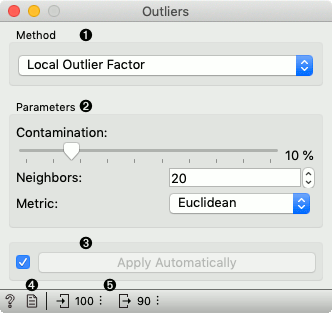
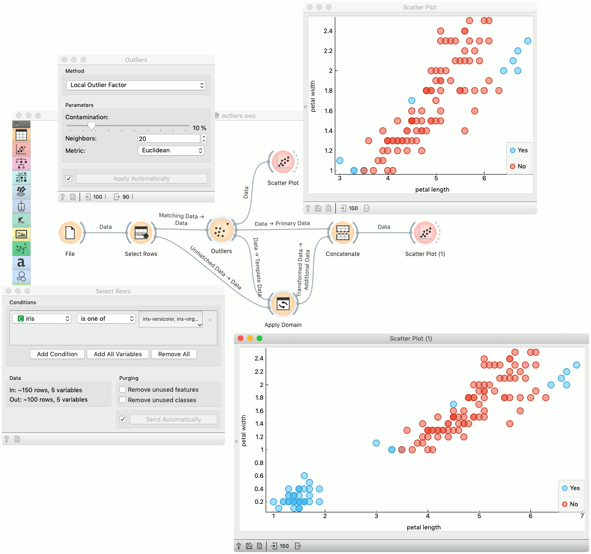

Outliers
Outlier detection widget.
Inputs
- Data: input dataset
Outputs
- Outliers: instances scored as outliers
- Inliers: instances not scored as outliers
- Data: input dataset appended Outlier variable
The Outliers widget applies one of the four methods for outlier detection. All methods apply classification to the dataset. One-class SVM with non-linear kernels (RBF) performs well with non-Gaussian distributions, while Covariance estimator works only for data with Gaussian distribution. One efficient way to perform outlier detection on moderately high dimensional datasets is to use the Local Outlier Factor algorithm. The algorithm computes a score reflecting the degree of abnormality of the observations. It measures the local density deviation of a given data point with respect to its neighbors. Another efficient way of performing outlier detection in high-dimensional datasets is to use random forests (Isolation Forest).

- Method for outlier detection:
- Set parameters for the method:
- One class SVM with non-linear kernel (RBF): classifies data as similar or different from the core class:
- Nu is a parameter for the upper bound on the fraction of training errors and a lower bound of the fraction of support vectors
- Kernel coefficient is a gamma parameter, which specifies how much influence a single data instance has
- Covariance estimator: fits ellipsis to central points with Mahalanobis distance metric:
- Contamination is the proportion of outliers in the dataset
- Support fraction specifies the proportion of points included in the estimate
- Local Outlier Factor: obtains local density from the k-nearest neighbors:
- Contamination is the proportion of outliers in the dataset
- Neighbors represents number of neighbors
- Metric is the distance measure
- Isolation Forest: isolates observations by randomly selecting a feature and then randomly selecting a split value between the maximum and minimum values of the selected feature:
- Contamination is the proportion of outliers in the dataset
- Replicabe training fixes random seed
- One class SVM with non-linear kernel (RBF): classifies data as similar or different from the core class:
- If Apply automatically is ticked, changes will be propagated automatically. Alternatively, click Apply.
- Produce a report.
- Number of instances on the input, followed by number of instances scored as inliers.
Example
Below is an example of how to use this widget. We used subset (versicolor and virginica instances) of the Iris dataset to detect the outliers. We chose the Local Outlier Factor method, with Euclidean distance. Then we observed the annotated instances in the Scatter Plot widget. In the next step we used the setosa instances to demonstrate novelty detection using Apply Domain widget. After concatenating both outputs we examined the outliers in the Scatter Plot (1).
